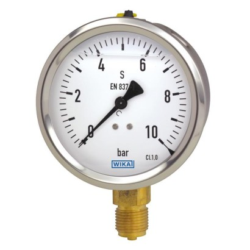
Thiết bị đo áp suất WIKA
Đồng hồ, cảm biến, công tắc và màng đo áp suất WIKA chính hãng Đức cho nhà máy, EPC và dầu khí.
Tra mã hàng, đối chiếu cấu hình, báo giá RFQ và chuẩn bị chứng từ CO/CQ. Hỗ trợ chọn đúng model, đúng yêu cầu kỹ thuật, đúng tiến độ giao hàng.
Chọn nhanh theo nhóm đo để tra model, so sánh thông số và gửi RFQ đúng cấu hình.

Đồng hồ, cảm biến, công tắc và màng đo áp suất WIKA chính hãng Đức cho nhà máy, EPC và dầu khí.
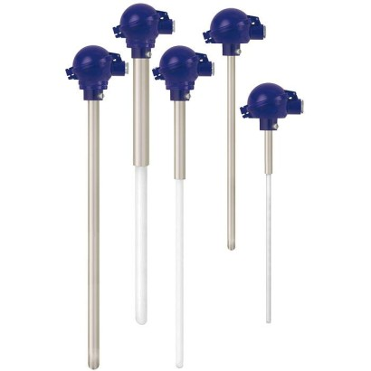
Đồng hồ nhiệt độ, RTD Pt100, can nhiệt, transmitter và thermowell WIKA chính hãng.

Cảm biến và công tắc đo mức phao, thủy tĩnh và bypass WIKA cho bồn, bể chứa công nghiệp.
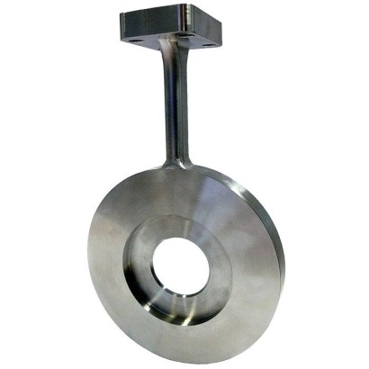
Lưu lượng kế điện từ, siêu âm, công tắc và cảm biến lưu lượng WIKA chính hãng.

Loadcell, cảm biến lực nén – kéo và bộ khuếch đại tín hiệu WIKA cho cân và kiểm định.
Bộ hiệu chuẩn áp suất, nhiệt độ, bơm tạo áp và đồng hồ chuẩn WIKA cho phòng thí nghiệm.
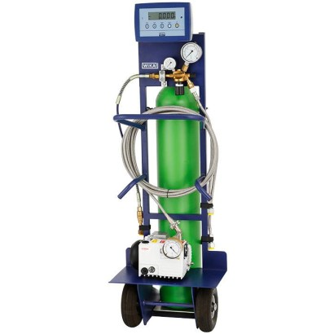
Thiết bị đo mật độ, giám sát và phân tích khí SF6 WIKA cho ngành điện cao thế.
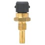
Giải pháp đo lường WIKA theo ngành: chiller, bơm nhiệt, năng lượng mặt trời, nhựa.
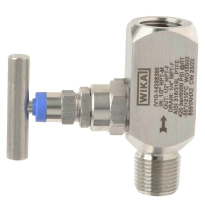
Thiết bị đo áp suất và nhiệt độ chuyên dụng cho ứng dụng Hydrogen của WIKA.
Cảm biến kết nối và giải pháp IIoT của WIKA cho giám sát từ xa.
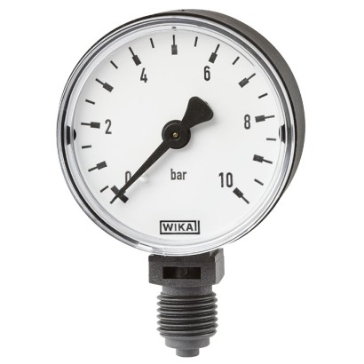
Các sản phẩm đo lường WIKA chính hãng khác do Fast Group Engineering cung cấp.
Các dòng WIKA thông dụng giúp định vị nhanh nhóm sản phẩm, dải đo và cấu hình cần báo giá.
Liquid filled gauge
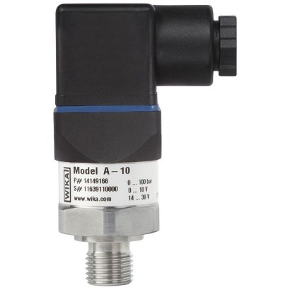
Pressure sensor A-10
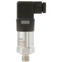
Pressure sensor S-20
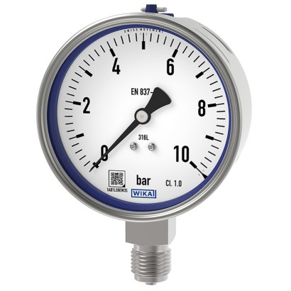
Bourdon tube pressure gauge, stainless steel
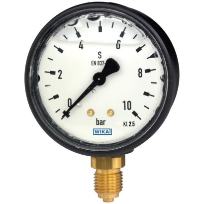
Bourdon tube pressure gauge, copper alloy
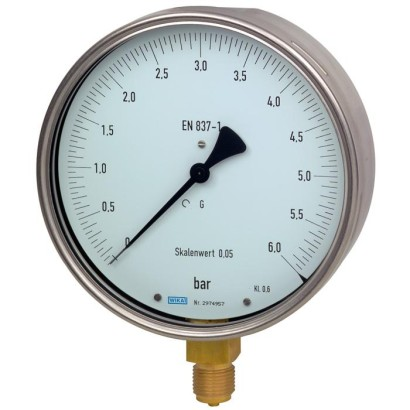
Test gauge, copper alloy
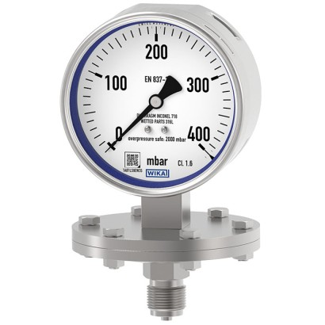
Diaphragm pressure gauge
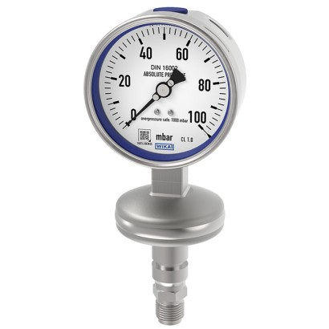
Absolute pressure gauge, stainless steel
Fast Group Engineering là nhà cung cấp WIKA chính hãng Đức, phục vụ EPC, nhà máy và dự án dầu khí (VSP, PTSC). Đội ngũ kỹ thuật hơn 10 năm kinh nghiệm O&G (ex-Halliburton, Baker Hughes, SLB).